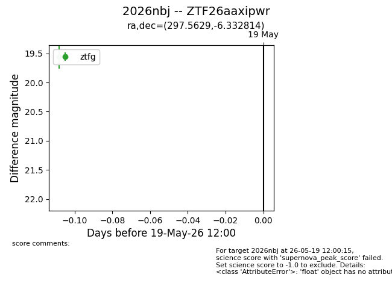
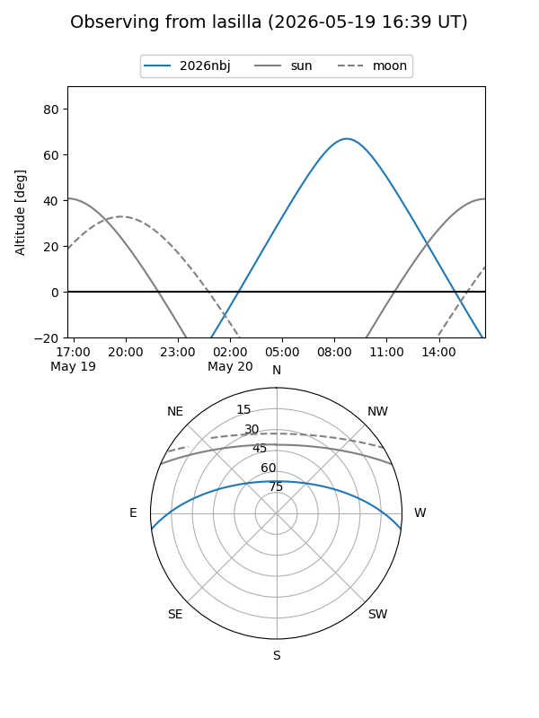
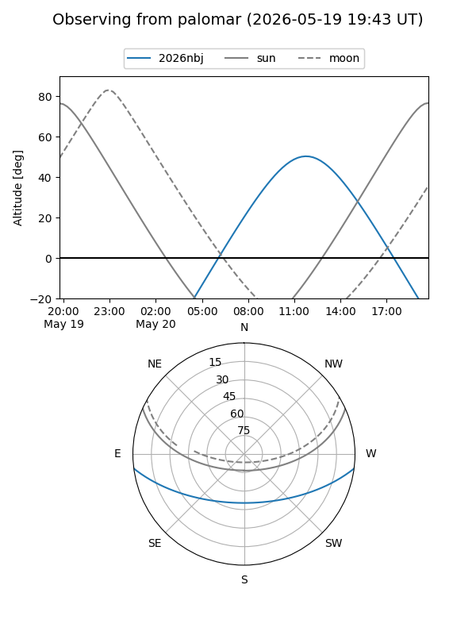
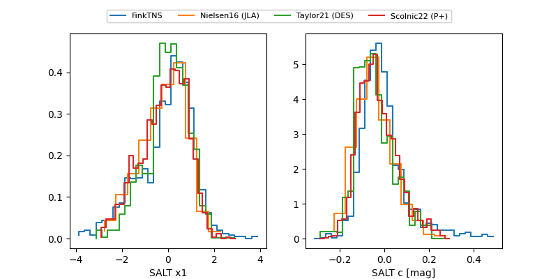

2026nbj
Target 2026nbj at 2026-05-19 12:03
Aliases and brokers:
FINK: link
Lasair: link
ALeRCE: link
TNS: link
YSE: link
alt names
ZTF26aaxipwr (ztf,fink_ztf)
2026nbj (tns,yse)
Coordinates:
equatorial (ra, dec) = 297.5629,-6.33281
equatorial (HMS+DMS) = 19:50:15.10,-06:19:58.13
galactic (l, b) = (33.9367,-15.95078)
Flags:
Photometry:
last ztfg=19.56
1 ztfg detections
Lightcurve

Visibility


Additional plots
